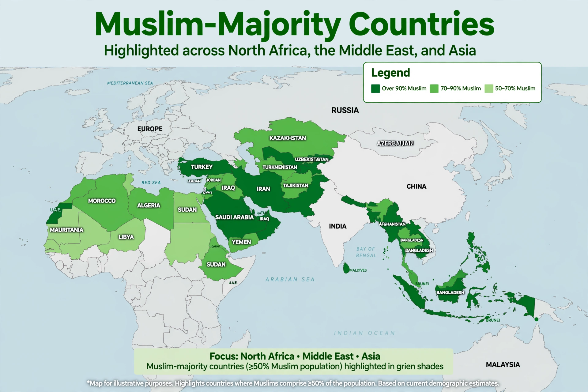

The terms Muslim world and Islamic world commonly refer to the Islamic community, which is also known as the ummah, and to the countries and regions where Islam is the dominant religion, culture or political presence. The term sometimes also denotes the historical caliphates and the lands ruled by them.
Islam is the world's second-largest religion, with roughly two billion adherents as of the 2020s — about a quarter of the global population. Muslims form a majority in some 49 countries, concentrated in North Africa, the Middle East, Central and South Asia and Southeast Asia. Indonesia is the country with the largest Muslim population, followed by Pakistan, India and Bangladesh; India has one of the largest Muslim populations of any country although Muslims are a minority there. The Organisation of Islamic Cooperation (OIC), founded in 1969, has 57 member states and describes itself as the collective voice of the Muslim world.
The Islamic world expanded from Arabia in the 7th century under the Rashidun and Umayyad caliphates, and reached a cultural florescence during the Abbasid-era Islamic Golden Age in science, medicine, mathematics and philosophy. Later powers included the Ottoman, Safavid and Mughal empires — the "gunpowder empires". Following European colonisation in the 19th and 20th centuries, most Muslim-majority states gained independence after the Second World War.
The great majority of Muslims are Sunni, with Shia Muslims forming roughly 10–13 percent, concentrated in Iran, Iraq, Bahrain and Azerbaijan, alongside smaller traditions such as Ibadi Islam in Oman. Shared institutions include the mosque, the Quran, the Arabic language of liturgy, and finance and development bodies such as the Islamic Development Bank.